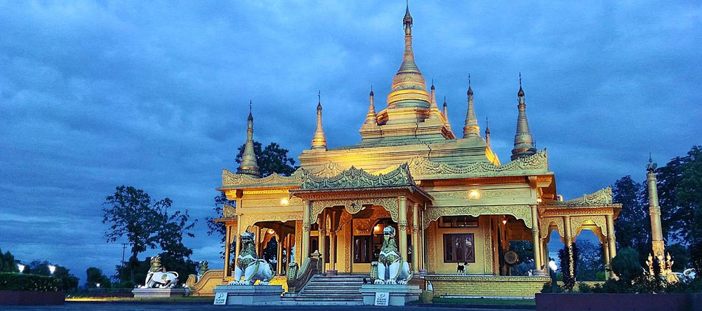
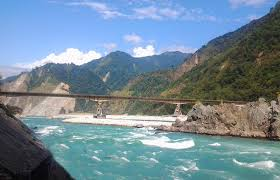

Parasuram Kund Temple


Parasnath Temple
Parshuram Mahadev Temple is a cave Shiva temple located at border of Pali district and Rajsamand district of Rajasthan state in India. The main cave temple comes in Rajsamand district, whereas Kund Dham comes in Desuri Tehsil of Pali district. It is about 100 km away from Pali and only 10 km from famous Kumbhalgarh fort. The place is 14 km from Sadri and 160km from Jodhpur. Access from lower altitude Sadri side is easier; however, access from Kumbhalgarh, Rajsamand, Nathdwara or Udaipur involves a little trekking downhill from a place designated as parking for the temple (google map takes a winding route). There are 500 stairs to reach the ancient cave from Sadri side.
It is said that Parshuram, the sixth avatar of Lord Vishnu, made the cave with his axe and used to worship the lord Shiva at this serene place in the foothills of the Aravalis mountain range. The cave, 3,995 feet above sea-level, has naturally made figures of Lord Ganesh and Lord Shiva and also has nine Kunds which never go dry. This is one of the pleasant and delightful places. It is also known as Amarnath temple of Rajasthan and second Amarnath temple of India.[
History
In the picturesque hills of Aravali, the Parshuram Mahadev Cave temple was built by Parshuram himself by cutting the rock with his axe. To reach this cave temple, you have to travel 500 steps. Inside this cave temple, there is a self-geographical location where Parshuram, the sixth incarnation of Vishnu, had performed rigorous penance for many years of Lord Shiva. On the basis of austerity, he had received Dhanush, Akshay Tumar and Divya Charias from Lord Shiva.
The surprising thing is that the entire cave remains in the same rock. The pattern above is like the cow's thong. Natural self-geographical goofing is made right above the gender, from which there is continuous natural burning on Shivling. It is believed that Lord Parshuram, who was made under the main Shivling, had ever had austerity on Shiva's harsh penance. In this cave, the shape of a monster remains on a rock. Parasurama was struck by his fists.
According to a belief associated with this place, Lord Badrinath's cupboard can open the same person who has visited Parshuram Mahadev.
Another validation cave temple is associated with Swith Shivaling. There is a hole in the Cave Shivalinga in the temple, which is believed to be that the milk does not fall into the hole by milking it, even if it does not fill hundreds of water, Gets involved in At this place Parshuram had taught Danir Karna.
Access
Parashuram Mahadev temple is situated on the border of Rajsamand and Pali district of Rajasthan. The main cave temple comes in Rajsamand district whereas Kund Dham comes in Pali district. It is about 100 kilometers away from Pali and only 10 km from Kumbhalgarh fort.
Its height is 3600 feet above sea level. Somewhere far away there is Parshuram Mahadev's garden in the Saadri area. A few miles away from the cave temple is Mathrakundia, where Parshuram was freed from the sins of Matrica. Parshuram's father, Maharshi Jamdagni's Tapoprabhoomi, is 100 km away.
Festivals and fairs
Parshuram Mahadev Temple does not have any special program on Parshuram Jayanti, but every year Shravan Shukla Shishthi and Saptami get a huge fair here.
Fairs are organised here twice a year. On the Shravan Shukla Sastami and Saptami (6th and 7th) usually falling in August/September a large fair held. Some social organisations, notably Amar Ganga Charitable Trust, have been arranging food and lodging facilities for the past many years. The trust also organises 'Sangeet Sandhya' (musical nights) during fairs where local artists sing devotional songs. According to an estimate, around 900,000 people visit the holy place every year.